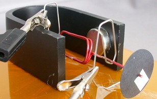

UCD School of Electrical, Electronic
|
Electric Motor Design |
| START | EQUIPMENT | THEORY | DESIGN | TESTING |
IntroductionThe aim of this exercise is to design, build and test a simple electric motor, using the equipment and materials provided in the laboratory. Your motor must meet some basic requirements:
 SafetyYou will be using simple hand tools in building your motor. You should use these carefully and safely - basic instruction will be provided in the laboratory. Always think about what might happen, and not just about what you intend to happen! For example, a screwdriver is a sharp instrument. You should always think about what would happen if the screwdriver slipped, and make sure that your hand (or any other part of your body, or anyone else's body) is not in danger of being stabbed! Similarly, pliers are for gripping things - you may find them useful in bending wire or paperclips. Take care to avoid pinching a finger between the moving parts. Consider what would happen if the pliers slipped off whatever it is gripping! Snips are for cutting wire - do not try to cut a paperclip! They have sharp blades - take care not to cut your finger! The other hazard with snips comes from the wire that you are cutting - the cut piece can fly off at high speed. This is particularly likely when you are cutting off a short piece of thick wire. Always hold the snips so that the cut piece will fly towards the floor, or in some other safe direction, well away from anybody's eyes. Finally, you will be removing insulation from wire using sandpaper. This creates dust. Do not inhale or ingest this dust, or allow it to come in contact with your eyes. Also, to avoid damage to the laboratory benches, please rest the wire on some scrap paper while you are using the sandpaper. What to Do?You might want to review the theory of electric motors, either here or in your lecture notes. Then look at the list of equipment and materials available, and start thinking about how you could build a motor. If you need help, look at the design page for some discussion of the design decisions that you will have to make. Then build your motor. Remember to leave room for the disc with the reflective tape, so that we can measure the speed of rotation of your motor. Now you need to test your motor - this page tells you how to set up the DC supply and connect it to your motor. It also provides some advice on what to do if your motor does not work. When you have perfected your motor, you should measure and record the DC supply voltage that you are using and the average current flowing in your motor. |